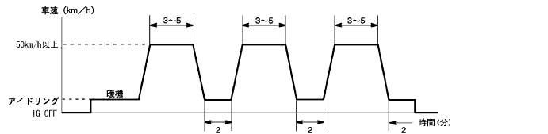
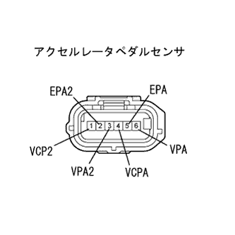

EFI System (2AZ-FE) Function Inspection |
| 1. Throttle Body Function Inspection |
Remove the EFI fuse and ETC-S fuse at the same time, and connect the fuses after 60 seconds or more have elapsed.
After installing the throttle body to the vehicle, turn the IG ON without operating the accelerator pedal.
Connect SST (TaSCAN) to DLC3.
Start the engine, and check that the check engine warning light is not illuminated and that the idle speed is within the standard when the A/C is turned ON → OFF after warm-up.
When the accelerator pedal is quickly depressed to near full open, check that the value of [ECU Data Monitor] - [Throttle Sensor No.1 Opening (THP1)] is 60% or more.
Perform a road test and check that there is nothing unusual.
| 2. Camshaft Oil Control Valve Assembly Operation Inspection |
Warm up the engine.
Connect SST (TaSCAN) to DLC3.
Following the SST (TaSCAN) screen display, select [Active Test] - [VVT Control].
Check the idle speed for [Not Performed/Performed].
Following the SST (TaSCAN) screen display, select [Active Test] - [VVT Linear Drive Bank 1].
Fully advance the valve timing (+100%) and check the idle speed.
| 3. Intake Air Flow Meter Sub-assembly Function Inspection |
Road Test
With all accessory switches OFF, start the engine and warm it up until the coolant temperature reaches 75°C or more.
Drive at 50km/h or more for 3-5 minutes. (*1)
Idle the engine for 2 minutes. (*2)
Repeat (*1) and (*2) 3 times.

Air-fuel Ratio F/B Learned Value Inspection
Connect SST (TaSCAN) to DLC3.
Following the SST (TaSCAN) screen display, select [ECU Data Monitor] - [F/B Learned Value Bank 1] and read the air-fuel ratio F/B learned value.
| Condition | Standard |
|---|---|
| At idle | -15-+15% |
Intake Air Amount Inspection
Turn the IG ON and wait for 30 seconds.
Following the SST (TaSCAN) screen display, select [ECU Data Monitor] - [Intake Air Amount] and read the intake air amount.
| 4. Accelerator Pedal Sensor Assembly Function Inspection |
Accelerator Sensor No.1 Voltage Inspection
Connect SST (TaSCAN) to DLC3.
Turn the IG ON with the engine stopped.
Following the SST (TaSCAN) screen display, select [ECU Data Monitor] - [Accelerator Sensor No.1 Voltage (VPA1)] and check the voltage with the accelerator fully closed.
Throttle Sensor Opening No.1 Inspection
Connect SST (TaSCAN) to DLC3.
Turn the IG ON with the engine stopped.
Following the SST (TaSCAN) screen display, select [ECU Data Monitor] - [Throttle Sensor No.1 Opening (THPS)] and check the opening.
| Condition | Throttle SensorNo.1 Opening |
|---|---|
| Accelerator pedal fully closed | 10 to 20% |
| Accelerator pedal fully open | 66 to 98% |
| Accelerator pedal fully closed → fully open | Changes continuously |
Accelerator Pedal Sensor Output Voltage Inspection
Turn IG ON.
 |
Using SST (Toyota electrical tester), measure the voltage between each terminal from the vehicle side connector.
| Pedal Condition | VPA←→EPA | VPA2←→EPA2 |
|---|---|---|
| Fully closed | 0.5 to 1.1V | 1.2 to 2.0V |
| Fully open | 2.6 to 4.5V | 3.4 to 5.0V |
| Fully open ←→ fully closed | Changes continuously | Changes continuously |